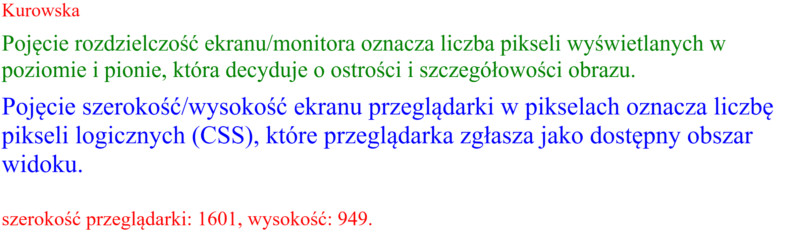

Kurowska
Pojęcie rozdzielczość ekranu/monitora oznacza liczba pikseli wyświetlanych w poziomie i pionie, która decyduje o ostrości i szczegółowości obrazu.
Pojęcie szerokość/wysokość ekranu przeglądarki w pikselach oznacza liczbę pikseli logicznych (CSS), które przeglądarka zgłasza jako dostępny obszar widoku.
